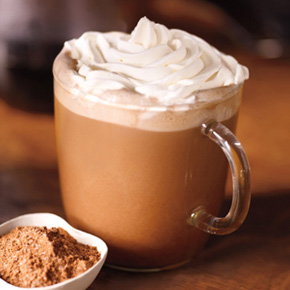

微積分飲料店
從原產地的一株咖啡樹，最終成為您手中的一杯咖啡；
我們堅持採購並且烘焙最高品質的咖啡，這是我們一直努力的基本原則。
微積分的企業使命是啟發並滋潤人們的心靈，在每個人、每一杯、每個社區中皆能體現。
秉持續追求卓越以及實踐企業使命與價值觀，
我們透過每一杯咖啡的傳遞，將獨特的微積分體驗帶入每位顧客的生活中。
每日精選

摩卡 Caffé Mocha
由濃縮咖啡、摩卡醬及新鮮蒸奶調製，覆上輕盈柔細的鮮奶油，帶來香濃的巧克力及咖啡風味。
微積分一直努力幫助支持優質、透明且公平的交易。
作為一家公司，我們因出類拔萃的表現贏得了良好的聲譽。
我們堅持從源頭保證品質，這讓我們得以提供高品質咖啡，並重新投資到種植咖啡的人們和社區中。